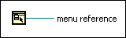

Current VI's Menubar Function
Owning Palette: Menu Functions
Requires: Base Development System
Returns the menu reference refnum of the current VI.
Use the menu reference refnum in conjunction with other Menu functions to programmatically modify the run-time menu of a VI.
(Real-Time Module) You cannot use this function in VIs that run on RT targets.

 Add to the block diagram Add to the block diagram |
 Find on the palette Find on the palette |